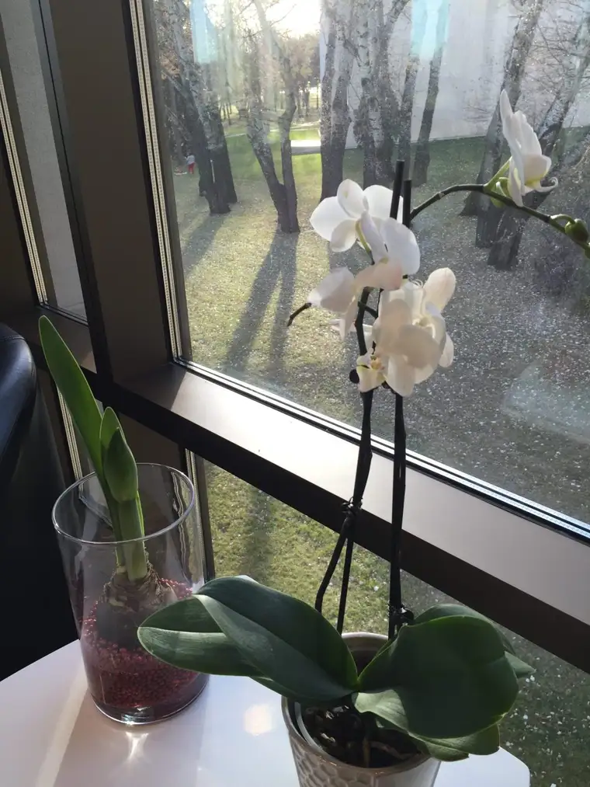
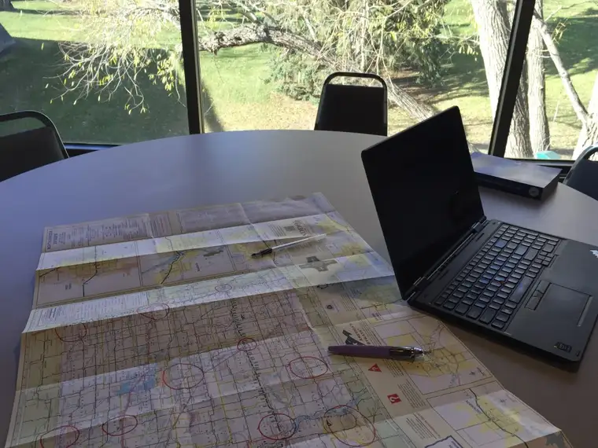
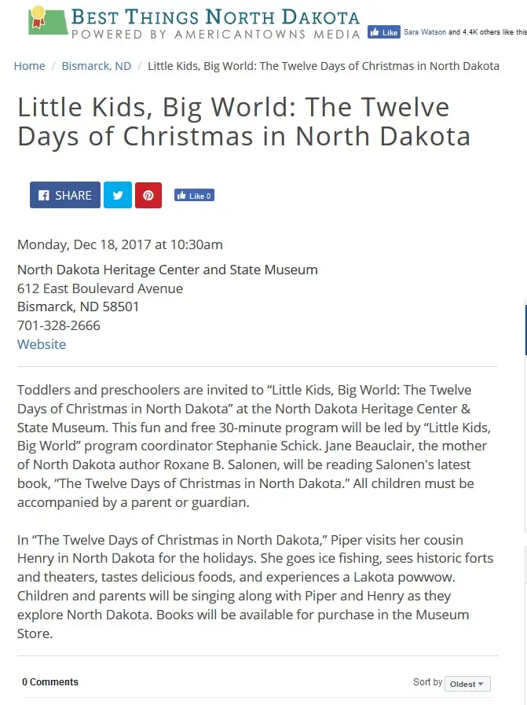
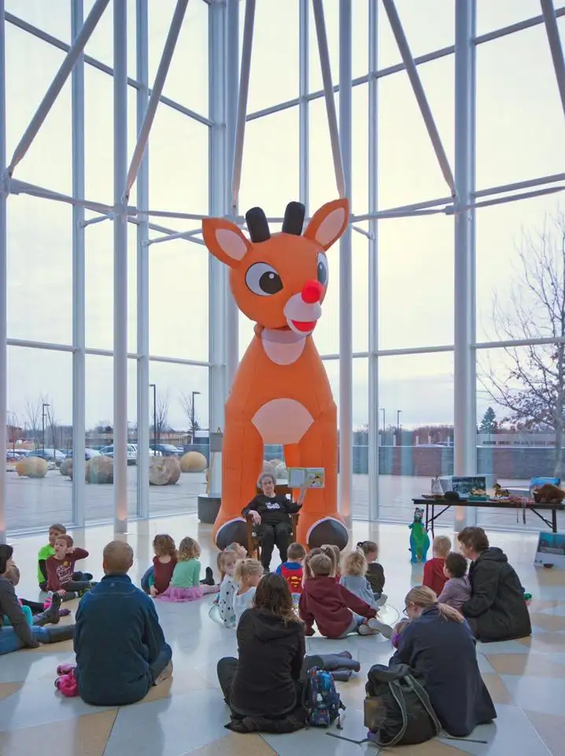
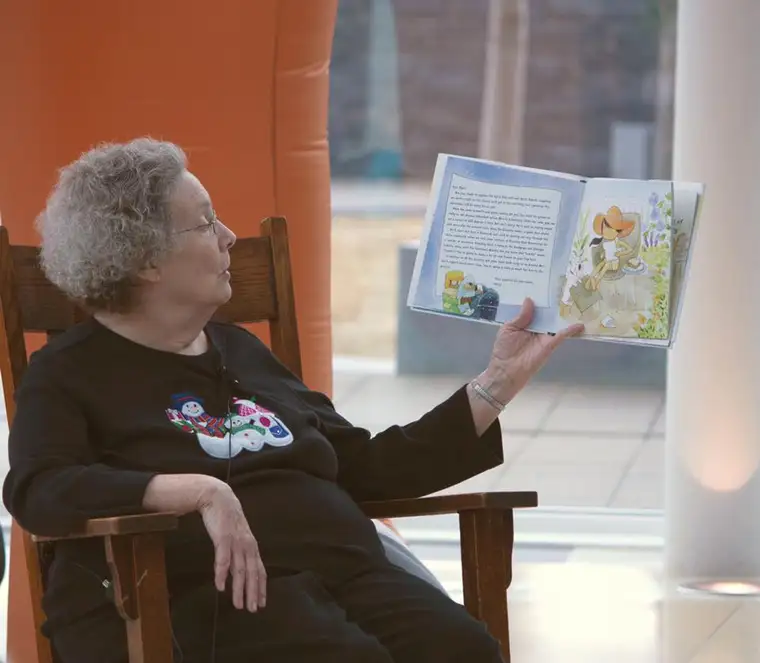
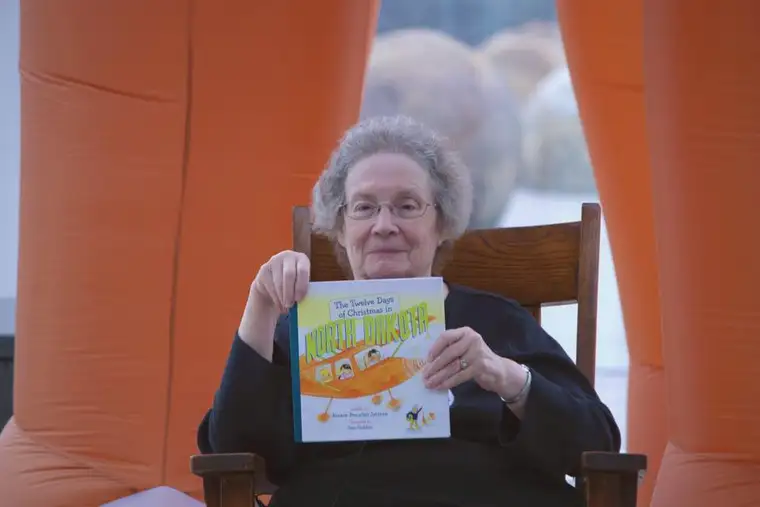
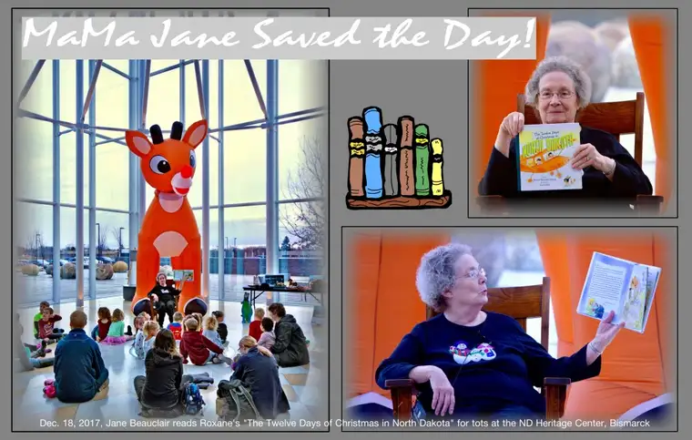

She has been, hands down, the biggest supporter and promoter of my new book, “The Twelve Days of Christmas in North Dakota.” Well, of all my books and writing, really.
But when this little creation was released in October, guess who snatched up the first copies and sent them to friends and family? Mom. She’s not above letting complete strangers know about the book, either, nor the fact that her daughter wrote it, should the opportunity present itself.
So it shouldn’t have surprised me all that much when our family experienced a serious health crisis — a situation that threatened my attendance at at least one of the planned book events surrounding the holiday launch — she quickly come up with a possible solution.
“Rox, if you end up not being able to come to Bismarck to do the reading, I’d be willing to step in for you and do it myself.”
Hearing these words on the other end of the phone from my mother, an instant wave of relief came over me. It was still too early to concede, but just knowing what might be possible in the event of being called to stay home – that the event wouldn’t have to be canceled altogether – brought such consolation.
I really owed it to the North Dakota Heritage Center in many ways, after all, to be there.

They’d supplied a worthy place for me to hunker down during the bulk of the writing of this creation, after all. And what a beautiful facility it was, the perfect place to soak in all things North Dakota while writing a book that takes place there.




It seemed right to return the favor by being there after its release to read to children as part of the facility’s regular “Little Kids Big World” offering for tots.

But my husband’s recovery from open-heart surgery demanded otherwise, and soon, I knew I had no choice but to stay put that day. So, not long before I was to leave Fargo to make the three-hour trek to Bismarck, I called Mom and asked if her offer remained. She didn’t hesitate. “I’ll be there, and I’m happy to do it.”
And so she was, and did.

It’s hard for me to understand the sacrificial ways of my mother. I don’t know that I’m as selfless. I have some work to do.
But when I think of the love I have for my own children, and what I would do to ensure their lives are filled with blessing, it makes some sense. When my children accomplish things and make their small marks in the world, it affects me. I feel a part of that in some tiny way. It’s separate from me, and yet attached.

When I look at my mother’s actions through this lens, I think that maybe, just maybe, I would be that selfless, too, if given a similar scenario.

Regardless, what I know for sure is that my mother really did save the day, and that her gift of time, of changing her day around to accommodate this, and of representing me at this reading, is something I will never forget. Even better, a professional photographer was on hand to capture a bit of it, so that I would get to feel as if I were there. Thank you, Jessica Rockeman, for these great visuals!
My mother-in-law, who is also so very dear, and comes in a close second if not tied for first on loving and promoting my work, then took it upon herself to make this sweet little collage to commemorate the event!

Thank you, Mom 1, and also Mom 2, for everything. You are both beautiful examples of what love looks like lived out. I hope, by my life’s end, I can come close to your vivid and many examples of motherly generosity. It is good to be so loved.
Q4U: When did someone “save the day” for you? What do you remember most about that experience?